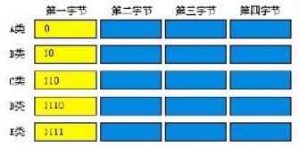
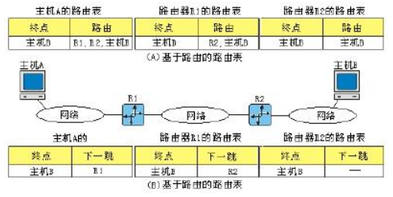

Table of Contents
1 IP 地址的分类
分成了 ABCDE 五类. 其中, ABC 是基本的 Internet 地址, 供用户使用. D 类地址用于广播, E 类地址为保留地址.
这五类地址, 用最前面的 4bit 来区分. 如:

由于 A 类地址的第 1 位已经用掉了, 剩下的 7 位能表示的最大数为 127. 所以 A 类地址第一个字节的范围是 0~127. 其他地址类似.
B类: 128~191
C类: 192~223
D类: 224~239
E类: 240~255
2 网络号和主机号
ABC 类地址能划分网络号和主机号, DE 类地址不划分.
A 类地址的网络号是第 1 个字节, 剩下的 3 个字节用于主机号.
B 类地址的网络号是前 2 个字节, 剩下的 2 个字节用于主机号.
C 类地址的网络号是前 3 个字节, 剩下的 1 个字节用于主机号.
3 特殊的IP地址
3.1 主机号全 0
主机号全 0 的 IP 地址不分配给任何主机, 作为网络本身的标识.
3.2 主机号全 1
直接广播地址. 目的地址为直接广播地址的数据包将会发送到网络中的所有节点. (但能否执行广播, 依赖于支撑的物理网络是否具有广播功能)
3.3 32 位全 1
有限广播地址, 通常由无盘工作站启动时使用. 希望从网络 IP 地址服务器处获得一个 IP 地址.
3.4 主机本身地址
32 位全 0.
3.5 回环地址
127.0.0.1 用于本机上软件测试和本机上网络应用程序之间的通信地址.
3.6 专用 IP 地址
10.0.0.0 - 10.255.255.255
172.16.0.0 - 172.31.255.255
192.168.0.0 - 192.168.255.255
4 子网划分
子网编址把 IP 地址中的主机号进一步细分成子网号和主机号. 因此, 子网编址 = 网络号 + 子网号 + 主机号. 如, B 类网络地址可以这样进行子网编址:
| 16 位 | 8 位 | 8 位 |
|---|---|---|
| 网络号 | 子网号 | 主机号 |
子网掩码: 值为 1 的位为网络号和子网号; 值为 0 的位为主机号.
于是, 给定一个 IP 地址和子网掩码, 可以先确定这个 IP 地址是 A 类, B 类还是 C 类地址, 然后根据子网掩码确定其主机号, 这样子网号也就确定了.
5 数据报分片
数据包可能通过多个不同的网络, 不同网络中帧的格式和长度与这个帧所处的物理网络使用的协议有关. 如, 将以太网的帧通过路由器发送到广域网, 路由器接收的是以太网的帧格式, 发送的是广域网的帧格式.
5.1 最大传送单元(MTU)
MTU 是最大传送单元, 不同网络的 MTU 是不同的.
数据包可以在源主机和传播路径上的路由器上进行分片, 但只能在目的主机上进行重装.
MTU 一般不包含该层的首部和尾部. 比如, 以太网中, MTU 一般为 1500B, 这里的内容就是 IP 数据报, 而不包括以太网中的首部和尾部.
6 校验和
IP 数据包的校验和只校验 IP 首部部分, 而不校验 IP 数据部分. 因为如果数据是高层协议的, 高层协议中有覆盖整个数据包的校验和, 因此 IP 数据报的校验和不必再校验所封装的数据部分.
另外, 每经过一个路由器, IP 数据包的首部都会改变一次, 而数据部分则不改变, 如果每次校验都包括数据部分, 会严重浪费资源.
7 交付与转发
交付: 在网络层的控制下, 一个数据包被底层网络处理的方式.
转发: 数据包被交付到下一站的方式.
7.1 交付
交付过程中, 有几个重要的概念: 连接类型, 直接交付, 间接交付.
7.1.1 连接类型
面向连接服务(虚电路): 在发送数据包之前先建立一条连接, 以后所有数据包都沿该路径, 按序发送, 当数据包发送完毕, 则连接终止.
无连接服务: 网络协议对待每个数据包都是独立的, 与其他数据包没有关系. 每个数据包有自己的路径到达目的地, 其到达顺序也没有规定.
可以看出, 面向连接服务中, 路由器不需要对每个数据包重新计算路由, 效率较高. 注意, IP 协议是无连接协议, 提供的是无连接服务.
7.1.2 直接交付
数据包的源点和终点在同一个物理网络上. 源主机根据目的主机的 IP 地址, 就可以判断是否在同一物理网络.
7.1.3 间接交付
间接交付就是指源点和终点不在同一个物理网络上的情况.
间接交付必然包括一个直接交付, 若干个间接交付.
7.2 转发
过去, 通过查找路由表来确定下一跳. 但是现在已经变得不可能, 因为路由表中的项目数太多, 使得查找效率低下. 下面介绍三种现在比较常见的方法.
7.2.1 下一跳方法
每个路由表中只保留下一跳的地址, 而不保留完整的路由信息.

7.2.3 特定主机方法
特定主机方法将目的主机地址在路由表中全部给出, 这与特定网络方法的思想是相反的.